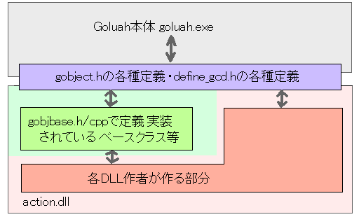

キャラクターDLL作成・概要
キャラクターのアニメーションや攻撃力設定等はプログラムにより行います。システムはキャラクターフォルダのaction.dllを実行時にロードし、キャラクター(および、飛び道具等の付属オブジェクト)の動作時にDLLの関数を呼び出します。
キャラクタのDLLはDLLテンプレートから作ってください。
DLLテンプレートには以下のファイルが含まれます
gobject.h
define_gcd.h
変更してはいけません。本体実行ファイル側とのインターフェイスとなる各種構造体や定数の定義がなされています。それぞれの詳細に関しては適宜リファレンスを参照してください。
gobjbase.h
gobjbase.cpp
通常変更してはいけません。ここで定義されているクラスに関してはクラスリファレンスを参照してください。
ここで定義・実装されたクラスから派生して個々のキャラクターを作ります。
character.def
DLLから外部に関数をexportするための定義ファイルです。いじる必要は多分ありません。
character.h
character.cpp
action.cpp
このファイルをいじります。character.hで基本的なキャラクタークラス定義をしています。このクラスをいじくりまわして自分のキャラクターを作ってください。
概念図(?)

というわけで、上がなんか概念図みたいなものです。
一番の基本になるのは gobject.h です。gobjbase.h/cpp はそれをより便利に使うためのクラス定義で、これらのクラスの使用は本来は任意です。が、ここからの説明はgobjbase.h/cppを変更せずにそのまま使うことを前提に説明を行います。
必要となる言語的な知識
開発するために必要となるC/C++の言語知識はおおむね以下の通りです：
(C) : 変数、関数
(C) : #define , #include マクロ等の基本的なプリプロセス
(C) : ビット単位での整数値の演算
(C) : 構造体
(C) : 配列
(C) : ポインタ、関数ポインタ
(C?) : コンパイル、リンク、ライブラリ
(C++) : クラス
(C++) : クラスの継承
(C++) : 関数のオーバーライド
一口に「必要」といっても、程度の差がかなりありますが、少なくともちょっとググって出てくる程度の予備知識はもっていたほうがいいでしょう。
その後は必要に応じて追加で調べて知識を補充してください。